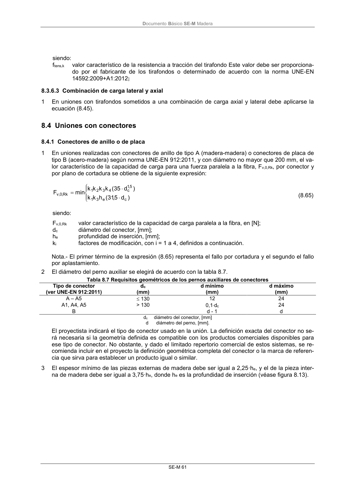

DB-SE-M Madera · edición 2019-12-20 · capa oficial
Documento DB-SE-M-oficial · SHA-256 del PDF 26b5819839ebfda78b0b119c5e76a0a37773b0d763c05688541870075df93718
Página física 67 de 132.
Copia fiel del PDF fuente · Fuente oficial
Ficha de la disposición en la fuente oficial
Formato: Texto de la página (Markdown)
Documento Básico SE-M Madera SE-M 61 siendo: ftens,k valor característico de la resistencia a tracción del tirafondo Este valor debe ser proporciona- do por el fabricante de los tirafondos o determinado de acuerdo con la norma UNE-EN 14592:2009+A1:2012; 8.3.6.3 Combinación de carga lateral y axial 1 En uniones con tirafondos sometidos a una combinación de carga axial y lateral debe aplicarse la ecuación (8.45). 8.4 Uniones con conectores 8.4.1 Conectores de anillo o de placa 1 En uniones realizadas con conectores de anillo de tipo A (madera-madera) o conectores de placa de tipo B (acero-madera) según norma UNE-EN 912:2011, y con diámetro no mayor que 200 mm, el va- lor característico de la capacidad de carga para una fuerza paralela a la fibra, Fv,0,Rk, por conector y por plano de cortadura se obtiene de la siguiente expresión: ) d 5, 31 ( h k k ) d 35 ( k k k k min F c e 3 1 5 ,1 c 4 3 2 1 Rk , 0 ,v (8.65) siendo: Fv,0,Rk valor característico de la capacidad de carga paralela a la fibra, en [N]; dc diámetro del conector, [mm]; he profundidad de inserción, [mm]; ki factores de modificación, con i = 1 a 4, definidos a continuación. Nota.- El primer término de la expresión (8.65) representa el fallo por cortadura y el segundo el fallo por aplastamiento. 2 El diámetro del perno auxiliar se elegirá de acuerdo con la tabla 8.7. Tabla 8.7 Requisitos geométricos de los pernos auxiliares de conectores Tipo de conector (ver UNE-EN 912:2011) dc (mm) d mínimo (mm) d máximo (mm) A – A5 130 12 24 A1, A4, A5 > 130 0,1dc 24 B d - 1 d dc diámetro del conector, [mm] d diámetro del perno, [mm]. El proyectista indicará el tipo de conector usado en la unión. La definición exacta del conector no se- rá necesaria si la geometría definida es compatible con los productos comerciales disponibles para ese tipo de conector. No obstante, y dado el limitado repertorio comercial de estos sistemas, se re- comienda incluir en el proyecto la definición geométrica completa del conector o la marca de referen- cia que sirva para establecer un producto igual o similar. 3 El espesor mínimo de las piezas externas de madera debe ser igual a 2,25·he, y el de la pieza inter- na de madera debe ser igual a 3,75·he, donde he es la profundidad de inserción (véase figura 8.13).
